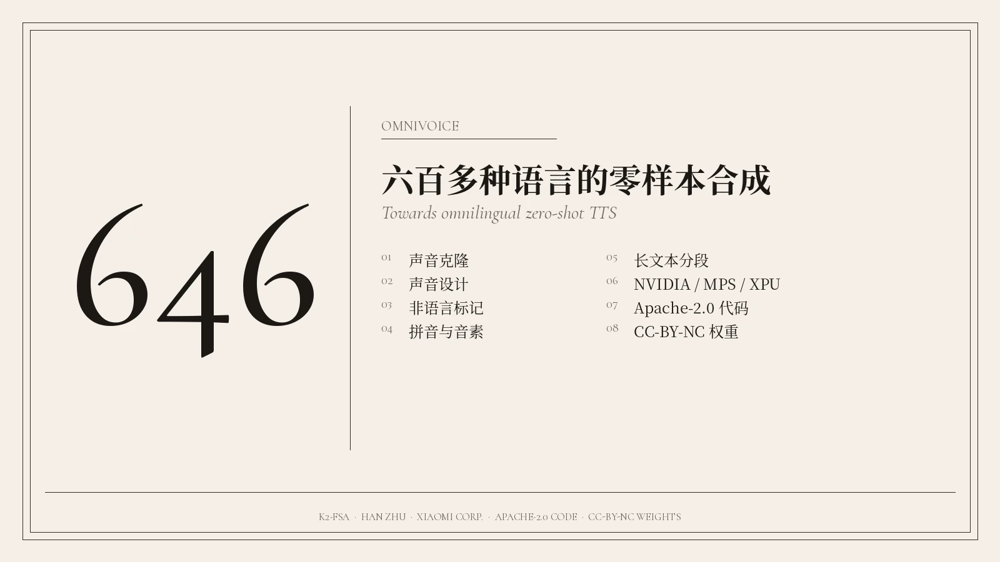

OmniVoice 是 k2-fsa 组织发布的本地文本转语音模型与 Python 工具包。论文第一作者是朱晗（Han Zhu），许可证附录里的版权行写明 Copyright 2026 Xiaomi Corp.。它可以做零样本合成：用一段参考音频克隆声音，或用性别、年龄、口音这类属性来设计声音，也可以让模型自己选一个声音。代码以 Apache-2.0 发布；预训练权重在 Hugging Face 模型卡上标明为 CC-BY-NC，原因是训练数据（例如 Emilia）的限制。文中关于「当前最广」「当前最好」、实时率等数字，均为原文自报。

这是什么
OmniVoice 的定位是大规模多语种零样本 TTS。配套论文是 arXiv:2604.00688《OmniVoice: Towards Omnilingual Zero-Shot Text-to-Speech with Diffusion Language Models》，2026 年 4 月 1 日首次提交，当前版本为 4 月 21 日的 v3。作者为 Han Zhu、Lingxuan Ye、Wei Kang、Zengwei Yao、Liyong Guo、Fangjun Kuang、Zhifeng Han、Weiji Zhuang、Long Lin、Daniel Povey。仓库属于 k2-fsa，pyproject.toml 里的作者栏写的是 Han Zhu，版本为 0.2.1，需要 Python 3.10 或更高。
论文摘要的写法是：它采用扩散语言模型风格的离散非自回归架构，把文本直接映射到多码本声学标记，而不是先走到语义标记再走到声学标记的两段式流程。为此用了两项技术：对全部码本做随机掩码以便训练，以及用预训练大语言模型做初始化，以保持可懂度。Hugging Face 模型卡把基础模型写成 Qwen/Qwen3-0.6B。演示页在 zhu-han.github.io/omnivoice，模型与在线试用分别在 Hugging Face 模型页 和 Space。样例音频请到官方演示页收听。
README 把这套系统称为当前最好的大规模多语零样本 TTS，并写实时率可低至 0.025（比实时快 40 倍）。这些评价和速度数字均为原文自报。
三种生成方式
三种模式走同一个 model.generate() 接口，命令行工具也都能用。
- 声音克隆。提供一段参考音频
ref_audio，以及对应的转写ref_text。如果不手写转写，模型会用 Whisper 自动转写；也可以指定本地 Whisper 模型和设备。参考音频建议 3 到 10 秒。编码一次后，可以把提示存成.pt文件，下次不必重新加载音频。跨语种克隆时，生成的语音会带上参考音频语种的口音——这是 README 的说明。 - 声音设计。不提供参考音频，只用
instruct描述说话人：性别、年龄、音高、耳语、英语口音、中文方言等，用逗号组合，中英文都可以写。属性表见官方 docs/voice-design.md。中文方言包括四川话、陕西话、河南话、东北话等；英语口音只对英文文本生效，中文方言只对中文文本生效。README 写明：模型主要在克隆任务上训练，所以克隆更稳；声音设计只在中文和英文数据上训练过，推广到其他语言时可能不稳定。 - 自动选声。既不给参考音频，也不给 instruct，模型自己选一个声音。
文本里还可以插入非语言标记，例如 [laughter]、[sigh]，以及一批疑问、惊讶、不满的标记。中文可以用带调号的拼音纠正读音，英文可以用 CMU 音素（大写、放在方括号里）区分如 bass 的两种读法。数字可以先正规化成词语，或打开 normalize_text=True（需额外安装 omnivoice[tn]，中英文走 WeTextProcessing）。闽南语在当前版本里只能用台罗拼音作为输入，不能直接用汉字——这是官方提示。
语言与数据
docs/languages.md 的标题写着支持 646 种语言、合计 58.1 万小时训练数据，并给出每种语言的编号、ISO 639-3 和时长。本页按该表逐行清点，得到 646 行，时长合计约 581,489 小时，与「581k hours」相符。分布并不均匀：英语约 20.6 万小时，中文约 11.1 万小时，日语约 3.7 万小时；有 33 种语言达到或超过 1,000 小时，也有 11 种不足 1 小时、265 种不足 10 小时。表是仓库自己公布的训练数据统计，不表示每种语言都经过独立听测，也不表示低时长语言的质量与英语、中文相当。
论文摘要还写，这 58.1 万小时全部来自开源数据。这是原文陈述。预训练权重为何仍是 CC-BY-NC，模型卡的解释是训练数据本身带有限制，并举 Emilia 为例。
怎么安装、怎么用
可以用 pip install omnivoice，也可以从 GitHub 安装最新源码，或克隆后用 uv sync。先要按设备装好 PyTorch：NVIDIA CUDA、Apple Silicon，或 Intel Arc 的 XPU 后端。项目称 Intel Arc 已在 Arc A310（4 GB）和 Arc Pro B50（16 GB）上测试；在 XPU 上 flash_attn 不可用，会回退到 SDPA。这些测试情况为原文自报。
不想写代码时，可以运行 omnivoice-demo --ip 0.0.0.0 --port 8001 打开本地网页，或使用官方 Space、Colab。命令行还有 omnivoice-infer（单条）和 omnivoice-infer-batch（可跨多卡批量）。加载模型时，NVIDIA 用 device_map="cuda:0"，Apple Silicon 用 mps，Intel Arc 用 xpu。默认输出是 24 kHz 的波形。
如果下载模型时连接 Hugging Face 不顺，README 建议先设置 export HF_ENDPOINT="https://hf-mirror.com"。
生成参数与长文本
常用参数包括扩散步数 num_step（默认 32，想更快可用 16）、语速 speed、固定时长 duration（会覆盖语速）、以及分类器自由引导 guidance_scale。完整列表见 docs/generation-parameters.md。
长文本会自动切段：估计时长超过 audio_chunk_threshold（默认 30 秒）时，按约 audio_chunk_duration（默认 15 秒）分段生成，以保持显存接近恒定。默认还会做前后处理，例如去掉参考音频里过长的静音，以及裁掉输出末尾的静音；如果必须让输出正好等于指定的 duration，需要关掉 postprocess_output。
README 还介绍了 FlashInfer 加速，并给出一张在单卡 H100、中文 seed-tts 测试集上的实时率表，batch=8 时 FlashInfer 的平均 RTF 写为 0.0115。表中数字及「无损」「ASR 核验」等表述均为原文自报。
社区生态
官方文档列出了一批社区项目，并写明它们由社区维护，不由 OmniVoice 团队官方支持。其中与本站已有条目直接相关的是 OmniVoice-Studio：它是 VoiceStudio 的上游引擎方向，VoiceStudio 的默认 TTS 引擎就是 OmniVoice。其他还包括视频翻译配音（pyVideoTrans）、Apple Silicon 上的 MLX 推理、ComfyUI 节点、兼容 OpenAI 接口的 HTTP 服务、有声书工具等。完整名单见附录中的社区项目一节；各仓库许可需自行核对，本页不转载那些仓库的 README 或源码。
许可与免责声明
仓库根目录的 LICENSE 是 Apache License 2.0，附录里的版权行是 Copyright 2026 Xiaomi Corp.。pyproject.toml 的 license 字段同样写着 Apache-2.0。附录 C 收录该许可证原文。
预训练权重的许可与代码不同。Hugging Face 模型卡写明：「Our code is released under the Apache 2.0 License. The pre-trained model is licensed under the CC-BY-NC due to constraints from its training data (e.g., Emilia).」模型卡没有另附一份独立的 LICENSE 文件，也没有写明 CC-BY-NC 的版本号。这意味着：源码可以按 Apache-2.0 使用；公开发布的预训练模型按非商业的 CC-BY-NC 条款使用，不能把这两套许可混成一套。应用工具（例如 VoiceStudio）的许可，也不自动覆盖模型权重或生成输出的权利。
README 的免责声明禁止将模型用于未经授权的声音克隆、声音假冒、欺诈、诈骗或其他非法、不道德的活动，并写明开发者对滥用不承担责任。这是项目自己的条款，不是法律意见。
相关阅读
- VoiceStudio：完全本地的开源 ElevenLabs 替代 — 默认引擎就是 OmniVoice；应用本身是 AGPL-3.0，默认权重仍是 CC-BY-NC。
- Digital Human Koubo：一张照片 + 一句话，让 AI Agent 做出数字人口播成片 — 云端换声路线的对照，其中用到小米的语音接口。
- AvatarScript：写一段带“导演批注”的文字，得到会对口型、会演戏的头像视频 — 把合成语音接到会演戏的头像上。
- 给 Opus 5.5 一个网址，剪视频时就能搜 520 万条免费音频 — 另一条给视频配声音的路径：检索开放音效，而不是克隆人声。
附录 A：README 全文中译
OmniVoice 是一个大规模多语种的零样本文本转语音（TTS）模型，支持六百多种语言。它建立在一种扩散语言模型风格的架构上，生成质量高、推理速度快，并支持声音克隆与声音设计。以上评价均为项目自述。
目录：主要特点 | 安装 | 快速开始 | Python API | 命令行工具 | 训练与评测 | 讨论与交流 | 引用
主要特点
- 支持六百多种语言：项目称这是零样本 TTS 模型中最广的语言覆盖（完整列表）。
- 声音克隆：项目自称具有当前最好的克隆质量。
- 声音设计：通过指定说话人属性来控制声音（性别、年龄、音高、方言/口音、耳语等）。
- 细粒度控制：可用非语言符号（例如
[laughter]），也可用拼音或音素纠正发音。 - 快速推理：项目称实时率（RTF）可低至 0.025（比实时快 40 倍）。
- 扩散语言模型风格架构：项目称这是一套干净、精简、可扩展的设计，同时兼顾质量与速度。
安装
请在 pip 与 uv 中选择一种。
pip
建议使用全新的虚拟环境（如
conda、venv），以免依赖冲突。
第一步：安装 PyTorch
NVIDIA GPU
# 按自己的 CUDA 版本安装 pytorch，例如：
pip install torch==2.8.0+cu128 torchaudio==2.8.0+cu128 --extra-index-url https://download.pytorch.org/whl/cu128
Apple Silicon
pip install torch==2.8.0 torchaudio==2.8.0
Intel Arc GPU（XPU）
Intel Arc GPU（Alchemist 与 Battlemage 架构）可通过 PyTorch 的 XPU 后端运行。 - 先为操作系统安装 [Intel GPU 驱动](https://dgpu-docs.intel.com/driver/installation.html)。 - 再从 Intel 的 wheel 源安装带 XPU 支持的 PyTorch：pip install torch torchaudio --index-url https://pytorch-extension.intel.com/release-whl/stable/xpu/us/
python -c "import torch; print(torch.xpu.is_available(), torch.xpu.device_count())"
第二步：安装 OmniVoice（任选一种）
# 从 PyPI 安装（稳定版）
pip install omnivoice
# 安装 GitHub 上的最新源码（不必先克隆）
pip install git+https://github.com/k2-fsa/OmniVoice.git
# 开发安装（先克隆，再以可编辑方式安装）
git clone https://github.com/k2-fsa/OmniVoice.git
cd OmniVoice
pip install -e .
uv
克隆仓库并同步依赖：
git clone https://github.com/k2-fsa/OmniVoice.git
cd OmniVoice
uv sync
提示：可用镜像，例如 uv sync --default-index "https://mirrors.aliyun.com/pypi/simple"。
快速开始
不必写代码也可以试用 OmniVoice：
- 启动本地网页界面：
omnivoice-demo --ip 0.0.0.0 --port 8001 - 或直接打开 Hugging Face Space
- 或在 Google Colab 中运行
如果下载预训练模型时连接 Hugging Face 有困难，可在运行前设置 export HF_ENDPOINT="https://hf-mirror.com"。
完整用法见下文的 Python API 与命令行工具。
Python API
OmniVoice 支持三种生成模式。本节的功能在命令行工具里同样可用。
声音克隆
用一段短的参考音频克隆声音。提供 ref_audio 与 ref_text：
from omnivoice import OmniVoice
import soundfile as sf
import torch
model = OmniVoice.from_pretrained(
"k2-fsa/OmniVoice",
device_map="cuda:0",
dtype=torch.float16
)
# Apple Silicon 用户请改用 device_map="mps"
# Intel Arc GPU 用户请改用 device_map="xpu"
audio = model.generate(
text="Hello, this is a test of zero-shot voice cloning.",
ref_audio="ref.wav",
ref_text="Transcription of the reference audio.",
) # audio 是由 `np.ndarray` 组成的列表，形状为 (T,)，采样率 24 kHz。
# 如果不想手工填写 `ref_text`，可以直接省略。
# 模型会用 Whisper ASR 自动转写。若要使用本地副本
#（或换一个 Whisper 模型），请向 `from_pretrained` 传入
# `asr_model_name="..."`。若要指定 Whisper 加载到哪块设备
#（例如多 GPU 时的另一块卡，或 CPU），传入
# `asr_device="cuda:1"`（或 `"cpu"`）。
sf.write("out.wav", audio[0], 24000)
在多次会话中复用已克隆的声音
把参考音频编码一次，保存得到的提示，以后就可以跳过加载音频和自动转写：
prompt = model.create_voice_clone_prompt(
ref_audio="ref.wav", ref_text="Transcription of the reference audio."
)
prompt.save("my_voice.pt")
# 之后，在新的会话里：
from omnivoice import VoiceClonePrompt
prompt = VoiceClonePrompt.load("my_voice.pt")
audio = model.generate(text="Hello again!", voice_clone_prompt=prompt)
提示
- 参考音频建议用 3–10 秒。更长的音频会拖慢推理，也可能降低克隆质量。
- 若要标准发音，请使用与目标语音相同语言的参考音频。在跨语种克隆中（参考音频与目标语音不是同一种语言），生成的语音会带上参考音频语种的口音。
- 遇到阿拉伯数字时，先把数字正规化成词语，效果通常更好（例如把 “123” 写成 “one hundred twenty-three”）。也可以向
generate()传入normalize_text=True，让它自动处理（需额外安装：pip install "omnivoice[tn]"，会带上 WeTextProcessing）：
# 「I have 2345 apples.」会按数量读，而不是一个数字一个数字往下念。
audio = model.generate(text="I have 2345 apples.", normalize_text=True)
中文和英文使用 WeTextProcessing；其他语言对整数回退到 num2words。文内控制语法（[laughter]、[B EY1 S]、拼音调号）会保留。在 macOS（Apple Silicon）上，pynini 没有 wheel —— 请先执行 conda install -c conda-forge pynini。
更多提示见 docs/tips.md。
声音设计
用说话人属性描述想要的声音，不必提供参考音频。支持的属性包括：性别（male/female）、年龄（儿童到老年）、音高（极低到极高）、风格（耳语）、英语口音（American、British 等），以及中文方言（四川话、陕西话等）。属性用逗号分隔，不同类别可以自由组合。
audio = model.generate(
text="Hello, this is a test of zero-shot voice design.",
instruct="female, low pitch, british accent",
)
说明：模型主要在声音克隆任务上训练，因此克隆是最稳的模式。声音设计只在中文和英文数据上训练过。它可以推广到其他语言，但在某些低资源语言或边界情况下，结果可能不稳定。
完整属性表、中文对应词和用法提示，见 docs/voice-design.md。
自动选声
让模型自己选一个声音：
audio = model.generate(text="This is a sentence without any voice prompt.")
生成参数
以上三种模式共用同一个 model.generate() 接口。还可以用关键字参数继续控制生成行为：
audio = model.generate(
text="...",
num_step=32, # 扩散步数（想更快可用 16）
speed=1.0, # 语速（>1.0 更快，<1.0 更慢）
duration=10.0, # 固定输出时长，单位秒（会覆盖 speed）
# ... 更多选项
)
更细的控制见 docs/generation-parameters.md。
非语言符号与发音控制
OmniVoice 支持在输入文本里插入非语言符号，并用发音纠正覆盖默认读法。
非语言符号：直接在文本中插入如 [laughter] 这样的标记，加入表达性的非语言声音。
audio = model.generate(text="[laughter] You really got me. I didn't see that coming at all.")
支持的标记：[laughter]、[sigh]、[confirmation-en]、[question-en]、[question-ah]、[question-oh]、[question-ei]、[question-yi]、[surprise-ah]、[surprise-oh]、[surprise-wa]、[surprise-yo]、[dissatisfaction-hnn]。
发音控制（中文）：用带调号的拼音，纠正特定字的读音。
audio = model.generate(text="这批货物打ZHE2出售后他严重SHE2本了，再也经不起ZHE1腾了。")
发音控制（英文）：用 CMU 发音词典（大写，放在方括号里）覆盖默认的英文发音。
audio = model.generate(text="He plays the [B EY1 S] guitar while catching a [B AE1 S] fish.")
命令行工具
仓库提供三个命令行入口。命令行工具支持 Python API 里的全部功能（声音克隆、声音设计、自动选声、生成参数等），都通过命令行参数控制。
| 命令 | 说明 | 源码 |
|---|---|---|
omnivoice-demo |
交互式 Gradio 网页演示 | omnivoice/cli/demo.py |
omnivoice-infer |
单条推理 | omnivoice/cli/infer.py |
omnivoice-infer-batch |
跨多块 GPU 的批量推理 | omnivoice/cli/infer_batch.py |
演示
omnivoice-demo --ip 0.0.0.0 --port 8001
提供用于声音克隆和声音设计的网页界面。全部选项见 omnivoice-demo --help。
单条推理
# 声音克隆
# 可以省略 ref_text（Whisper 会自动转写 ref_audio）。
omnivoice-infer \
--model k2-fsa/OmniVoice \
--text "This is a test for text to speech." \
--ref_audio ref.wav \
--ref_text "Transcription of the reference audio." \
--output hello.wav
# 声音设计
omnivoice-infer --model k2-fsa/OmniVoice \
--text "This is a test for text to speech." \
--instruct "male, British accent" \
--output hello.wav
# 自动选声
omnivoice-infer \
--model k2-fsa/OmniVoice \
--text "This is a test for text to speech."\
--output hello.wav
批量推理
omnivoice-infer-batch 可以把批量推理分配到多块 GPU 上，面向大规模 TTS 任务。
omnivoice-infer-batch \
--model k2-fsa/OmniVoice \
--test_list test.jsonl \
--res_dir results/
测试列表是 JSONL 文件，每行一个 JSON 对象：
{"id": "sample_001", "text": "Hello world", "ref_audio": "/path/to/ref.wav", "ref_text": "Reference transcript", "instruct": "female, british accent", "language_id": "en", "duration": 10.0, "speed": 1.0}
只有 id 和 text 是必填项。ref_audio 与 ref_text 用于声音克隆模式。instruct 用于声音设计模式。如果既没有参考音频，也没有 instruct，模型会用随机声音来读文本。
language_id、duration 和 speed 是可选的。duration（秒）会固定输出长度；speed 控制语速。如果同时提供 duration 和 speed，speed 会被忽略。
FlashInfer 加速
项目称，使用 FlashInfer 内核，可以把推理加速约 2–2.9 倍，且「无损」（为 CFG 的条件/无条件对做序列打包，融合 RMSNorm / RoPE / GEMM 内核，并可选用 CUDA graphs）。
安装（NVIDIA GPU；请选择与 CUDA 版本匹配的索引，例如为以 CUDA 12.8 编译的 PyTorch 选用 cu128）：
pip install flashinfer-python==0.6.15.post1 "flashinfer-jit-cache==0.6.15.post1+cu128" \
--extra-index-url https://flashinfer.ai/whl/cu128/
在批量推理命令行中使用：
omnivoice-infer-batch \
--model k2-fsa/OmniVoice \
--test_list test.jsonl \
--res_dir results/ \
--batch_size 8 \
--enable_flashinfer true
或在 Python API 中使用：
from omnivoice.models.omnivoice_flashinfer import apply_flashinfer
model = OmniVoice.from_pretrained("k2-fsa/OmniVoice", device_map="cuda", dtype=torch.float16)
apply_flashinfer(model) # 吞吐 / 批量推理
apply_flashinfer(model, enable_cuda_graph=True) # 推荐用于 batch=1（低延迟）
CUDA graphs 更适合单路（batch=1）使用，因为这时内核启动开销占主导；在 batch >= 4 时，项目称普通的 FlashInfer 路径已经是最快配置。
基准（seed-tts 中文测试集，2020 条样本 / 3.3 小时音频，声音克隆，单卡 H100，fp16，num_step=32；平均 RTF 由 omnivoice-infer-batch 报告，输出据称为 ASR 核验无损）。下表数字为原文自报：
| batch size | baseline | FlashInfer | speedup |
|---|---|---|---|
| 1 | 0.0899 | 0.0430 | 2.1x |
| 1 + CUDA graph | — | 0.0367 | 2.4x |
| 2 | 0.0480 | 0.0245 | 2.0x |
| 4 | 0.0331 | 0.0152 | 2.2x |
| 8 | 0.0298 | 0.0115 | 2.6x |
训练与评测
完整流程——从数据准备到训练、评测和微调——见 examples/ 目录。
讨论与交流
可以直接在 GitHub Issues 上讨论。
官方 README 还提供了微信群和公众号的二维码，请到仓库原文查看。
社区项目
OmniVoice 周围已有一批社区项目。官方说明这些项目由社区构建和维护，不由 OmniVoice 团队官方支持。完整列表见 Community Projects。收录时列出的项目包括：
- ComfyUI-OmniVoice-TTS — ComfyUI 自定义节点
- vLLM-Omni — 全模态推理框架，支持 OmniVoice 服务
- audio.cpp — 用 GGML 做的纯 C++ 音频推理引擎
- pyVideoTrans — 视频翻译与配音，可将 OmniVoice 作为 TTS 引擎
- MLX-Audio — 基于 Apple MLX 的语音库
- OmniVoice-MLX — Apple Silicon 上的 MLX 推理后端
- RealtimeTTS — 实时文本转语音
- TTS-WebUI — 多模型 Gradio 网页界面
- OmniVoice-Studio — 桌面应用
- omnivoice-server — 兼容 OpenAI 的 HTTP 服务（
/v1/audio/speech） - omnivoice-rs — 基于 Candle 的 Rust 推理与 HTTP 服务
- omnivoice-trtllm — 用 TensorRT-LLM 与 Triton 部署
- Auris — 离线有声书阅读器
- LA Studio — 离线桌面音频工作站
- tts-audiobook-tool — 有声书制作工具
- LocalText2Voice — Windows 桌面长音频制作管线
各社区仓库的许可需自行核对，本页不转载它们的 README 或源码。
引用
@article{zhu2026omnivoice,
title={OmniVoice: Towards Omnilingual Zero-Shot Text-to-Speech with Diffusion Language Models},
author={Zhu, Han and Ye, Lingxuan and Kang, Wei and Yao, Zengwei and Guo, Liyong and Kuang, Fangjun and Han, Zhifeng and Zhuang, Weiji and Lin, Long and Povey, Daniel},
journal={arXiv preprint arXiv:2604.00688},
year={2026}
}
免责声明
严禁将本模型用于未经授权的声音克隆、声音假冒、欺诈、诈骗，或任何其他非法或不道德的活动。所有用户应确保完全遵守适用的当地法律、法规和伦理标准。开发者对任何滥用行为不承担责任，并倡导负责任的人工智能开发与使用，鼓励社区在人工智能研究与应用中坚持安全与伦理原则。
附录 B：README 英文原文
# OmniVoice 🌍
<p align="center">
<img width="200" height="200" alt="OmniVoice" src="https://zhu-han.github.io/omnivoice/pics/omnivoice.jpg" />
</p>
<p align="center">
<a href="https://huggingface.co/k2-fsa/OmniVoice"><img src="https://img.shields.io/badge/%F0%9F%A4%97%20Hugging%20Face-Model-FFD21E" alt="Hugging Face Model"></a>
<a href="https://huggingface.co/spaces/k2-fsa/OmniVoice"><img src="https://img.shields.io/badge/%F0%9F%A4%97%20Hugging%20Face-Space-blue" alt="Hugging Face Space"></a>
<a href="https://arxiv.org/abs/2604.00688"><img src="https://img.shields.io/badge/arXiv-Paper-B31B1B.svg"></a>
<a href="https://zhu-han.github.io/omnivoice"><img src="https://img.shields.io/badge/GitHub.io-Demo_Page-blue?logo=GitHub&style=flat-square"></a>
<a href="https://colab.research.google.com/github/k2-fsa/OmniVoice/blob/master/docs/OmniVoice.ipynb"><img src="https://colab.research.google.com/assets/colab-badge.svg" alt="Open In Colab"></a>
</p>
OmniVoice is a state-of-the-art massively multilingual zero-shot text-to-speech (TTS) model supporting over 600 languages. Built on a novel diffusion language model-style architecture, it generates high-quality speech with superior inference speed, supporting voice cloning and voice design.
**Contents**: [Key Features](#key-features) | [Installation](#installation) | [Quick Start](#quick-start) | [Python API](#python-api) | [Command-Line Tools](#command-line-tools) | [Training & Evaluation](#training--evaluation) | [Discussion](#discussion--communication) | [Citation](#citation)
## Key Features
- **600+ Languages Supported**: The broadest language coverage among zero-shot TTS models ([full list](docs/languages.md)).
- **Voice Cloning**: State-of-the-art voice cloning quality.
- **Voice Design**: Control voices via assigned speaker attributes (gender, age, pitch, dialect/accent, whisper, etc.).
- **Fine-grained Control**: Non-verbal symbols (e.g., `[laughter]`) and pronunciation correction via pinyin or phonemes.
- **Fast Inference**: RTF as low as 0.025 (40x faster than real-time).
- **Diffusion Language Model-style Architecture**: A clean, streamlined, and scalable design that delivers both quality and speed.
---
## Installation
Choose **one** of the following methods: **pip** or **uv**.
### pip
> We recommend using a fresh virtual environment (e.g., `conda`, `venv`, etc.) to avoid conflicts.
**Step 1**: Install PyTorch
<details>
<summary>NVIDIA GPU</summary>
```bash
# Install pytorch with your CUDA version, e.g.
pip install torch==2.8.0+cu128 torchaudio==2.8.0+cu128 --extra-index-url https://download.pytorch.org/whl/cu128
```
> See [PyTorch official site](https://pytorch.org/get-started/locally/) for other versions installation.
</details>
<details>
<summary>Apple Silicon</summary>
```bash
pip install torch==2.8.0 torchaudio==2.8.0
```
</details>
<details>
<summary>Intel Arc GPU (XPU)</summary>
Intel Arc GPUs (Alchemist and Battlemage architectures) are supported via PyTorch's XPU backend.
1. Install the [Intel GPU drivers](https://dgpu-docs.intel.com/driver/installation.html) for your OS.
2. Install PyTorch with XPU support from Intel's wheel index:
```bash
pip install torch torchaudio --index-url https://pytorch-extension.intel.com/release-whl/stable/xpu/us/
```
> See [Intel's PyTorch XPU guide](https://intel.github.io/intel-extension-for-pytorch/xpu/latest/) for version-specific instructions.
3. Verify the backend is working:
```bash
python -c "import torch; print(torch.xpu.is_available(), torch.xpu.device_count())"
```
**Notes**:
- `flash_attn` is not available on XPU; the model automatically falls back to SDPA.
- Training with packed sequences (`flex_attention`) has partial XPU support; single-GPU SDPA training should work.
- Tested on Arc A310 (Alchemist, 4 GB) and Arc Pro B50 (Battlemage, 16 GB).
</details>
**Step 2**: Install OmniVoice (choose one)
```bash
# From PyPI (stable release)
pip install omnivoice
# From the latest source on GitHub (no need to clone)
pip install git+https://github.com/k2-fsa/OmniVoice.git
# For development (clone first, editable install)
git clone https://github.com/k2-fsa/OmniVoice.git
cd OmniVoice
pip install -e .
```
### uv
Clone the repository and sync dependencies:
```bash
git clone https://github.com/k2-fsa/OmniVoice.git
cd OmniVoice
uv sync
```
> **Tip**: Can use mirror with `uv sync --default-index "https://mirrors.aliyun.com/pypi/simple"`
---
## Quick Start
Try OmniVoice without coding:
- Launch the local web UI: `omnivoice-demo --ip 0.0.0.0 --port 8001`
- Or try it directly on [HuggingFace Space](https://huggingface.co/spaces/k2-fsa/OmniVoice)
- Or run it in Google Colab: [](https://colab.research.google.com/github/k2-fsa/OmniVoice/blob/master/docs/OmniVoice.ipynb)
> If you have trouble connecting to HuggingFace when downloading the pre-trained models, set `export HF_ENDPOINT="https://hf-mirror.com"` before running.
For full usage, see the [Python API](#python-api) and [Command-Line Tools](#command-line-tools) sections below.
---
## Python API
OmniVoice supports three generation modes. All features in this section are also available via [command-line tools](#command-line-tools).
### Voice Cloning
Clone a voice from a short reference audio. Provide `ref_audio` and `ref_text`:
```python
from omnivoice import OmniVoice
import soundfile as sf
import torch
model = OmniVoice.from_pretrained(
"k2-fsa/OmniVoice",
device_map="cuda:0",
dtype=torch.float16
)
# Apple Silicon users: use device_map="mps" instead
# Intel Arc GPU users: use device_map="xpu" instead
audio = model.generate(
text="Hello, this is a test of zero-shot voice cloning.",
ref_audio="ref.wav",
ref_text="Transcription of the reference audio.",
) # audio is a list of `np.ndarray` with shape (T,) at 24 kHz.
# If you don't want to input `ref_text` manually, you can directly omit the `ref_text`.
# The model will use Whisper ASR to auto-transcribe it. To use a local copy (or
# a different Whisper model), pass `asr_model_name="..."` to `from_pretrained`.
# To control which device Whisper is loaded on (e.g. another GPU in multi-GPU
# setups, or the CPU), pass `asr_device="cuda:1"` (or `"cpu"`).
sf.write("out.wav", audio[0], 24000)
```
#### Reusing a cloned voice across sessions
Encode the reference audio once, save the resulting prompt, and skip the
audio loading / auto-transcription steps in later sessions:
```python
prompt = model.create_voice_clone_prompt(
ref_audio="ref.wav", ref_text="Transcription of the reference audio."
)
prompt.save("my_voice.pt")
# Later, in a new session:
from omnivoice import VoiceClonePrompt
prompt = VoiceClonePrompt.load("my_voice.pt")
audio = model.generate(text="Hello again!", voice_clone_prompt=prompt)
```
> **Tips**
>
> - Use a 3–10 seconds reference audio clip. Longer audio slows down inference and may degrade cloning quality.
> - For standard pronunciation, use a reference audio in the **same language** as the target speech. In cross-lingual voice cloning (i.e., the reference audio and target speech are in different languages), the generated speech will carry an accent from the reference audio's language.
> - For better results with Arabic numerals, normalize them to words first (e.g., "123" → "one hundred twenty-three"). You can pass `normalize_text=True` to `generate()` to do this automatically (opt-in; install the extra with `pip install "omnivoice[tn]"`, which pulls in [WeTextProcessing](https://github.com/wenet-e2e/WeTextProcessing)):
>
> ```python
> # "I have 2345 apples." is read correctly instead of digit-by-digit.
> audio = model.generate(text="I have 2345 apples.", normalize_text=True)
> ```
>
> Chinese and English use WeTextProcessing; other languages fall back to `num2words` for integers. Inline control syntax (`[laughter]`, `[B EY1 S]`, pinyin tone markers) is preserved. On macOS (Apple Silicon), `pynini` has no wheel — install it via `conda install -c conda-forge pynini` first.
>
> For more tips, see [docs/tips.md](docs/tips.md).
### Voice Design
Describe the desired voice with speaker attributes — no reference audio needed.
Supported attributes: **gender** (male/female), **age** (child to elderly),
**pitch** (very low to very high), **style** (whisper), **English accent**
(American, British, etc.), and **Chinese dialect** (四川话, 陕西话, etc.).
Attributes are comma-separated and freely combinable across categories.
```python
audio = model.generate(
text="Hello, this is a test of zero-shot voice design.",
instruct="female, low pitch, british accent",
)
```
> **Note**: The model is primarily trained on the voice cloning task, so voice cloning is the most stable mode. Voice design is trained on Chinese and English data only. It can generalize to other languages, but may produce unstable results for some low-resource languages or edge cases.
See [docs/voice-design.md](docs/voice-design.md) for the full attribute
reference, Chinese equivalents, and usage tips.
### Auto Voice
Let the model choose a voice automatically:
```python
audio = model.generate(text="This is a sentence without any voice prompt.")
```
### Generation Parameters
All above three modes share the same `model.generate()` API. You can further control the generation behavior via keyword arguments:
```python
audio = model.generate(
text="...",
num_step=32, # diffusion steps (or 16 for faster inference)
speed=1.0, # speed factor (>1.0 faster, <1.0 slower)
duration=10.0, # fixed output duration in seconds (overrides speed)
# ... more options
)
```
See more detailed control in [docs/generation-parameters.md](docs/generation-parameters.md).
### Non-Verbal & Pronunciation Control
OmniVoice supports inline **non-verbal symbols** and **pronunciation correction** within the input text.
**Non-verbal symbols**: Insert tags like `[laughter]` directly in the text to add expressive non-verbal sounds.
```python
audio = model.generate(text="[laughter] You really got me. I didn't see that coming at all.")
```
Supported tags: `[laughter]`, `[sigh]`, `[confirmation-en]`, `[question-en]`, `[question-ah]`, `[question-oh]`, `[question-ei]`, `[question-yi]`, `[surprise-ah]`, `[surprise-oh]`, `[surprise-wa]`, `[surprise-yo]`, `[dissatisfaction-hnn]`.
**Pronunciation control (Chinese)**: Use pinyin with tone numbers to correct specific character pronunciations.
```python
audio = model.generate(text="这批货物打ZHE2出售后他严重SHE2本了，再也经不起ZHE1腾了。")
```
**Pronunciation control (English)**: Use [CMU pronunciation dictionary](https://svn.code.sf.net/p/cmusphinx/code/trunk/cmudict/cmudict.0.7a) (uppercase, in brackets) to override default English pronunciations.
```python
audio = model.generate(text="He plays the [B EY1 S] guitar while catching a [B AE1 S] fish.")
```
---
## Command-Line Tools
Three CLI entry points are provided. The CLI tools support all features available in the Python API (voice cloning, voice design, auto voice, generation parameters, etc.) — all controlled via command-line arguments.
| Command | Description | Source |
|---|---|---|
| `omnivoice-demo` | Interactive Gradio web demo | [omnivoice/cli/demo.py](omnivoice/cli/demo.py) |
| `omnivoice-infer` | Single-item inference | [omnivoice/cli/infer.py](omnivoice/cli/infer.py) |
| `omnivoice-infer-batch` | Batch inference across multiple GPUs | [omnivoice/cli/infer_batch.py](omnivoice/cli/infer_batch.py) |
### Demo
```bash
omnivoice-demo --ip 0.0.0.0 --port 8001
```
Provides a web UI for voice cloning and voice design. See `omnivoice-demo --help` for all options.
### Single Inference
```bash
# Voice Cloning
# ref_text can be omitted (Whisper will auto-transcribe ref_audio to get it).
omnivoice-infer \
--model k2-fsa/OmniVoice \
--text "This is a test for text to speech." \
--ref_audio ref.wav \
--ref_text "Transcription of the reference audio." \
--output hello.wav
# Voice Design
omnivoice-infer --model k2-fsa/OmniVoice \
--text "This is a test for text to speech." \
--instruct "male, British accent" \
--output hello.wav
# Auto Voice
omnivoice-infer \
--model k2-fsa/OmniVoice \
--text "This is a test for text to speech."\
--output hello.wav
```
### Batch Inference
`omnivoice-infer-batch` can distribute batch inference across multiple GPUs, designed for large-scale TTS tasks.
```bash
omnivoice-infer-batch \
--model k2-fsa/OmniVoice \
--test_list test.jsonl \
--res_dir results/
```
The test list is a JSONL file where each line is a JSON object:
```json
{"id": "sample_001", "text": "Hello world", "ref_audio": "/path/to/ref.wav", "ref_text": "Reference transcript", "instruct": "female, british accent", "language_id": "en", "duration": 10.0, "speed": 1.0}
```
Only `id` and `text` are mandatory fields. `ref_audio` and `ref_text` are used in voice cloning mode. `instruct` is used in voice design mode. If no reference audio or instruct are provided, the model will generate text in a random voice.
`language_id`, `duration`, and `speed` are optional. `duration` (in seconds) fixes the output length; `speed` controls the speaking rate. If `duration` and `speed` are both provided, `speed` will be ignored.
### FlashInfer Acceleration
Inference can be accelerated ~2-2.9x losslessly with [FlashInfer](https://github.com/flashinfer-ai/flashinfer) kernels (sequence packing for the CFG cond/uncond pair, fused RMSNorm/RoPE/GEMM kernels, and optional CUDA graphs).
**Installation** (NVIDIA GPUs; pick the index matching your CUDA version, e.g. cu128 for PyTorch built with CUDA 12.8):
```bash
pip install flashinfer-python==0.6.15.post1 "flashinfer-jit-cache==0.6.15.post1+cu128" \
--extra-index-url https://flashinfer.ai/whl/cu128/
```
**Usage** with the batch inference CLI:
```bash
omnivoice-infer-batch \
--model k2-fsa/OmniVoice \
--test_list test.jsonl \
--res_dir results/ \
--batch_size 8 \
--enable_flashinfer true
```
or with the Python API:
```python
from omnivoice.models.omnivoice_flashinfer import apply_flashinfer
model = OmniVoice.from_pretrained("k2-fsa/OmniVoice", device_map="cuda", dtype=torch.float16)
apply_flashinfer(model) # throughput / batched inference
apply_flashinfer(model, enable_cuda_graph=True) # recommended for batch=1 (low latency)
```
CUDA graphs are recommended for single-stream (batch=1) usage, where kernel-launch overhead dominates; at batch >= 4 the plain FlashInfer path is already the fastest configuration.
**Benchmark** (seed-tts zh testset, 2020 samples / 3.3h audio, voice cloning, single H100, fp16, `num_step=32`; Average RTF as reported by `omnivoice-infer-batch`, outputs ASR-verified lossless):
| batch size | baseline | FlashInfer | speedup |
|---|---|---|---|
| 1 | 0.0899 | 0.0430 | 2.1x |
| 1 + CUDA graph | — | 0.0367 | 2.4x |
| 2 | 0.0480 | 0.0245 | 2.0x |
| 4 | 0.0331 | 0.0152 | 2.2x |
| 8 | 0.0298 | **0.0115** | **2.6x** |
---
## Training & Evaluation
See [examples/](examples/) for the complete pipeline — from data preparation to training, evaluation, and finetuning.
---
## Discussion & Communication
You can directly discuss on [GitHub Issues](https://github.com/k2-fsa/OmniVoice/issues).
You can also scan the QR code to join our wechat group or follow our wechat official account.
| Wechat Group | Wechat Official Account |
| ------------ | ----------------------- |
| | |
---
## Community Projects
OmniVoice is supported by a growing ecosystem of community projects.
Explore them in [Community Projects](docs/community-projects.md).
---
## Citation
```bibtex
@article{zhu2026omnivoice,
title={OmniVoice: Towards Omnilingual Zero-Shot Text-to-Speech with Diffusion Language Models},
author={Zhu, Han and Ye, Lingxuan and Kang, Wei and Yao, Zengwei and Guo, Liyong and Kuang, Fangjun and Han, Zhifeng and Zhuang, Weiji and Lin, Long and Povey, Daniel},
journal={arXiv preprint arXiv:2604.00688},
year={2026}
}
```
---
## Disclaimer
Users are strictly prohibited from using this model for unauthorized voice cloning, voice impersonation, fraud, scams, or any other illegal or unethical activities. All users shall ensure full compliance with applicable local laws, regulations, and ethical standards. The developers assume no liability for any misuse of this model and advocate for responsible AI development and use, encouraging the community to uphold safety and ethical principles in AI research and applications.附录 C：LICENSE（Apache-2.0）原文
Apache License
Version 2.0, January 2004
http://www.apache.org/licenses/
TERMS AND CONDITIONS FOR USE, REPRODUCTION, AND DISTRIBUTION
1. Definitions.
"License" shall mean the terms and conditions for use, reproduction,
and distribution as defined by Sections 1 through 9 of this document.
"Licensor" shall mean the copyright owner or entity authorized by
the copyright owner that is granting the License.
"Legal Entity" shall mean the union of the acting entity and all
other entities that control, are controlled by, or are under common
control with that entity. For the purposes of this definition,
"control" means (i) the power, direct or indirect, to cause the
direction or management of such entity, whether by contract or
otherwise, or (ii) ownership of fifty percent (50%) or more of the
outstanding shares, or (iii) beneficial ownership of such entity.
"You" (or "Your") shall mean an individual or Legal Entity
exercising permissions granted by this License.
"Source" form shall mean the preferred form for making modifications,
including but not limited to software source code, documentation
source, and configuration files.
"Object" form shall mean any form resulting from mechanical
transformation or translation of a Source form, including but
not limited to compiled object code, generated documentation,
and conversions to other media types.
"Work" shall mean the work of authorship, whether in Source or
Object form, made available under the License, as indicated by a
copyright notice that is included in or attached to the work
(an example is provided in the Appendix below).
"Derivative Works" shall mean any work, whether in Source or Object
form, that is based on (or derived from) the Work and for which the
editorial revisions, annotations, elaborations, or other modifications
represent, as a whole, an original work of authorship. For the purposes
of this License, Derivative Works shall not include works that remain
separable from, or merely link (or bind by name) to the interfaces of,
the Work and Derivative Works thereof.
"Contribution" shall mean any work of authorship, including
the original version of the Work and any modifications or additions
to that Work or Derivative Works thereof, that is intentionally
submitted to Licensor for inclusion in the Work by the copyright owner
or by an individual or Legal Entity authorized to submit on behalf of
the copyright owner. For the purposes of this definition, "submitted"
means any form of electronic, verbal, or written communication sent
to the Licensor or its representatives, including but not limited to
communication on electronic mailing lists, source code control systems,
and issue tracking systems that are managed by, or on behalf of, the
Licensor for the purpose of discussing and improving the Work, but
excluding communication that is conspicuously marked or otherwise
designated in writing by the copyright owner as "Not a Contribution."
"Contributor" shall mean Licensor and any individual or Legal Entity
on behalf of whom a Contribution has been received by Licensor and
subsequently incorporated within the Work.
2. Grant of Copyright License. Subject to the terms and conditions of
this License, each Contributor hereby grants to You a perpetual,
worldwide, non-exclusive, no-charge, royalty-free, irrevocable
copyright license to reproduce, prepare Derivative Works of,
publicly display, publicly perform, sublicense, and distribute the
Work and such Derivative Works in Source or Object form.
3. Grant of Patent License. Subject to the terms and conditions of
this License, each Contributor hereby grants to You a perpetual,
worldwide, non-exclusive, no-charge, royalty-free, irrevocable
(except as stated in this section) patent license to make, have made,
use, offer to sell, sell, import, and otherwise transfer the Work,
where such license applies only to those patent claims licensable
by such Contributor that are necessarily infringed by their
Contribution(s) alone or by combination of their Contribution(s)
with the Work to which such Contribution(s) was submitted. If You
institute patent litigation against any entity (including a
cross-claim or counterclaim in a lawsuit) alleging that the Work
or a Contribution incorporated within the Work constitutes direct
or contributory patent infringement, then any patent licenses
granted to You under this License for that Work shall terminate
as of the date such litigation is filed.
4. Redistribution. You may reproduce and distribute copies of the
Work or Derivative Works thereof in any medium, with or without
modifications, and in Source or Object form, provided that You
meet the following conditions:
(a) You must give any other recipients of the Work or
Derivative Works a copy of this License; and
(b) You must cause any modified files to carry prominent notices
stating that You changed the files; and
(c) You must retain, in the Source form of any Derivative Works
that You distribute, all copyright, patent, trademark, and
attribution notices from the Source form of the Work,
excluding those notices that do not pertain to any part of
the Derivative Works; and
(d) If the Work includes a "NOTICE" text file as part of its
distribution, then any Derivative Works that You distribute must
include a readable copy of the attribution notices contained
within such NOTICE file, excluding those notices that do not
pertain to any part of the Derivative Works, in at least one
of the following places: within a NOTICE text file distributed
as part of the Derivative Works; within the Source form or
documentation, if provided along with the Derivative Works; or,
within a display generated by the Derivative Works, if and
wherever such third-party notices normally appear. The contents
of the NOTICE file are for informational purposes only and
do not modify the License. You may add Your own attribution
notices within Derivative Works that You distribute, alongside
or as an addendum to the NOTICE text from the Work, provided
that such additional attribution notices cannot be construed
as modifying the License.
You may add Your own copyright statement to Your modifications and
may provide additional or different license terms and conditions
for use, reproduction, or distribution of Your modifications, or
for any such Derivative Works as a whole, provided Your use,
reproduction, and distribution of the Work otherwise complies with
the conditions stated in this License.
5. Submission of Contributions. Unless You explicitly state otherwise,
any Contribution intentionally submitted for inclusion in the Work
by You to the Licensor shall be under the terms and conditions of
this License, without any additional terms or conditions.
Notwithstanding the above, nothing herein shall supersede or modify
the terms of any separate license agreement you may have executed
with Licensor regarding such Contributions.
6. Trademarks. This License does not grant permission to use the trade
names, trademarks, service marks, or product names of the Licensor,
except as required for reasonable and customary use in describing the
origin of the Work and reproducing the content of the NOTICE file.
7. Disclaimer of Warranty. Unless required by applicable law or
agreed to in writing, Licensor provides the Work (and each
Contributor provides its Contributions) on an "AS IS" BASIS,
WITHOUT WARRANTIES OR CONDITIONS OF ANY KIND, either express or
implied, including, without limitation, any warranties or conditions
of TITLE, NON-INFRINGEMENT, MERCHANTABILITY, or FITNESS FOR A
PARTICULAR PURPOSE. You are solely responsible for determining the
appropriateness of using or redistributing the Work and assume any
risks associated with Your exercise of permissions under this License.
8. Limitation of Liability. In no event and under no legal theory,
whether in tort (including negligence), contract, or otherwise,
unless required by applicable law (such as deliberate and grossly
negligent acts) or agreed to in writing, shall any Contributor be
liable to You for damages, including any direct, indirect, special,
incidental, or consequential damages of any character arising as a
result of this License or out of the use or inability to use the
Work (including but not limited to damages for loss of goodwill,
work stoppage, computer failure or malfunction, or any and all
other commercial damages or losses), even if such Contributor
has been advised of the possibility of such damages.
9. Accepting Warranty or Additional Liability. While redistributing
the Work or Derivative Works thereof, You may choose to offer,
and charge a fee for, acceptance of support, warranty, indemnity,
or other liability obligations and/or rights consistent with this
License. However, in accepting such obligations, You may act only
on Your own behalf and on Your sole responsibility, not on behalf
of any other Contributor, and only if You agree to indemnify,
defend, and hold each Contributor harmless for any liability
incurred by, or claims asserted against, such Contributor by reason
of your accepting any such warranty or additional liability.
END OF TERMS AND CONDITIONS
APPENDIX: How to apply the Apache License to your work.
To apply the Apache License to your work, attach the following
boilerplate notice, with the fields enclosed by brackets "[]"
replaced with your own identifying information. (Don't include
the brackets!) The text should be enclosed in the appropriate
comment syntax for the file format. We also recommend that a
file or class name and description of purpose be included on the
same "printed page" as the copyright notice for easier
identification within third-party archives.
Copyright 2026 Xiaomi Corp.
Licensed under the Apache License, Version 2.0 (the "License");
you may not use this file except in compliance with the License.
You may obtain a copy of the License at
http://www.apache.org/licenses/LICENSE-2.0
Unless required by applicable law or agreed to in writing, software
distributed under the License is distributed on an "AS IS" BASIS,
WITHOUT WARRANTIES OR CONDITIONS OF ANY KIND, either express or implied.
See the License for the specific language governing permissions and
limitations under the License.